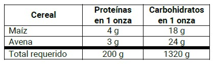
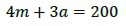
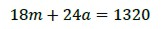
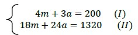
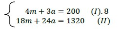
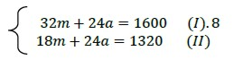
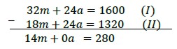
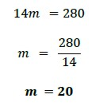
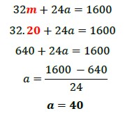
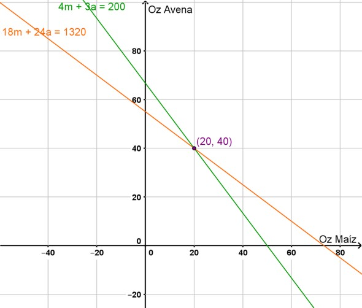

Método de Reducción
Martín es estudiante de Agronomía y debe preparar una mezcla de avena y maíz para alimentar el ganado. Cada onza de avena contiene 4 g de proteínas y 18 g de carbohidratos. Una onza de maíz contiene 3 g de proteínas y 24 g de carbohidratos. Indiquen cuántas onzas de cada cereal debe incluir la mezcla para cumplir con los requisitos nutricionales de 200 g de proteínas y 1320 g de carbohidratos por comida.
Definamos las variables que intervienen para obtener la solución:
m = una onza de maíz.
a = una onza de avena.
Tenemos que combinar las onzas de maíz y de cereal de manera tal que se cumplan con los requisitos nutricionales establecidos. Podemos confeccionar primeramente una tabla nutricional:

La ecuación que modela la cantidad de proteínas que se deben reunir con la combinación de cereales y maíz es la siguiente:

La ecuación que modela la cantidad de carbohidratos que se deben reunir con la combinación de cereales y maíz es la siguiente:

Esto nos permite conformar el siguiente sistema de ecuaciones:

Para resolver este sistema de ecuaciones usaremos el método de reducción:
Este método consiste en:
-
Multiplicar cada ecuación del sistema por un número no nulo, de modo que los coeficientes de una de las incógnitas sean iguales en las dos ecuaciones.
-
Luego, se restan las ecuaciones obtenidas para eliminar esa incógnita y poder despejar la otra.
1º) En nuestro sistema de ecuaciones podemos observar que ninguna de las incógnitas tienen el mismo coeficiente. Seleccionamos una de ellas para eliminarla y procedemos de la siguiente manera:
Vamos a eliminar la incógnita a; entonces a la ecuación (I) la multiplicamos por 8:

Y obtenemos el siguiente sistema equivalente

Con esta operación logramos que la incógnita a tenga el mismo coeficiente en ambas ecuaciones.
2º) Se restan miembro a miembro las dos ecuaciones que forman el sistema:

3º) Se resuelve la ecuación que quedó:

4º) Se sustituye el valor de m en alguna de las ecuaciones originales y se despeja la otra incógnita:

La solución al sistema es el par ordenado (20; 40), que nos indica que se deberán mezclar 20 onzas de maíz y 40 onzas de avena para alcanzar las cantidades de proteínas y carbohidratos requeridas por comida.


En los siguientes videos te presentamos una serie de ejemplos de resolución con el método de reducción
Obra publicada con Licencia Creative Commons Reconocimiento Compartir igual 4.0